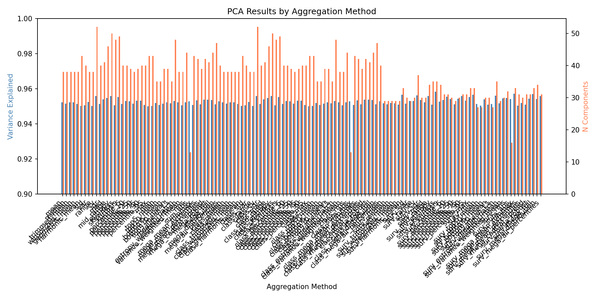
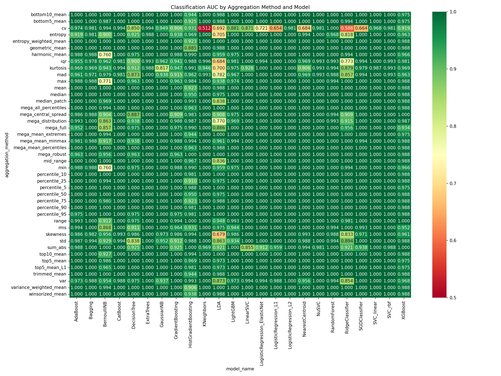
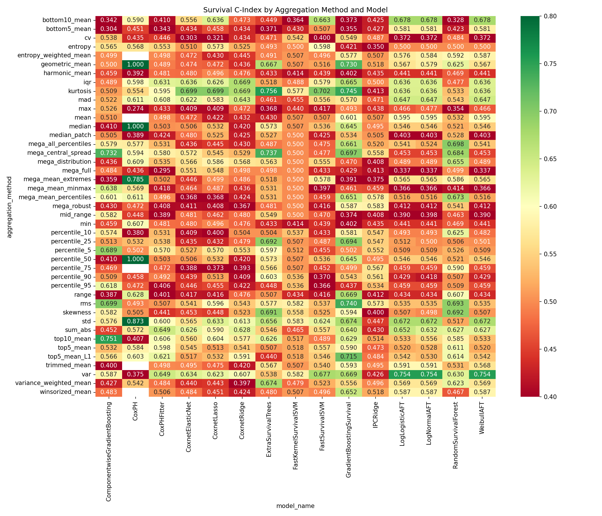
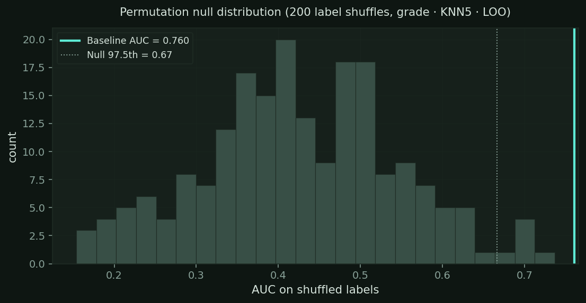

Fig 4 · Output file structure & pipeline scale. The AUC heatmap shown is an illustrative schematic with simulated values; see the Results page for the real numbers.
Analysis & diagnostics

PCA variance retained across components (95 % cutoff).

Classification performance heatmap across models and aggregations.

Survival C-index heatmap across models and cancers.

Permutation null for tumor grade: baseline AUC 0.76 vs null (p = 0.005).
Kaplan–Meier survival curves
Median split of held-out LOPO risk scores from the best WSI model per cancer.